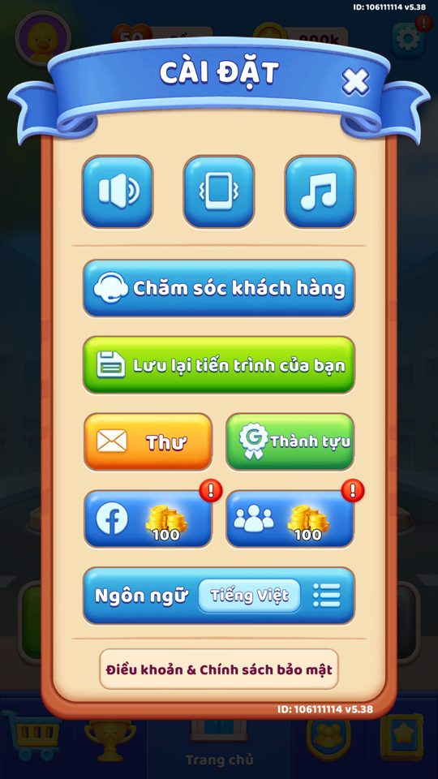

Ảnh chụp màn hình
Save mã hóa gắn tài khoản, giá trị RAM bọc ObscuredInt, level server-authoritative và FailSafe.
Mô tả
- SaveLoadHandler lưu/đọc dữ liệu cục bộ, mã hóa mỗi khóa bằng key dẫn xuất từ mã tài khoản và MD5 với seed cố định.
- Nhờ khóa gắn tài khoản, file save không thể chép sang tài khoản hay thiết bị khác.
- Giá trị quan trọng trong bộ nhớ (vàng, state) được bọc ObscuredInt để chống chỉnh sửa RAM.
- Level là server-authoritative và có cơ chế FailSafe kiểm tra tính hợp lệ, nên không spoof lên màn cao được trên máy.
Thiết kế chi tiết
Tóm tắt thiết kế
Code SaveGamePro mã hoá AES theo mã tài khoản; giá trị nhạy cảm là ObscuredInt; level có bản max_level_server mã hoá; FailSafe từ màn 30.
Playtest Save local đã sửa lên màn 503 vẫn chơi được, nhưng bảng xếp hạng chỉ ghi điểm 2 (level thật trên server). Tức là sửa save chỉ đổi trải nghiệm local, không đổi dữ liệu xếp hạng.
Luồng người chơi từng bước
- Hình ảnhGiao diện PlaytestẢnh liên quan từ playtest 28/10 (và ảnh 07/10 nếu có).

Điểm server = 2 
07/10: Lưu tiến trình trong Cài đặt

Bảng tổng hợp mọi tính năng đã làm chi tiết: GoodsSort_ThietKeChiTiet.xlsx.
Còn thiếu / chưa xác minh
Mở khóa & điểm vào
Luôn hoạt động (nền tảng kỹ thuật). FailSafe bật bằng RemoteConfig.onOffFailSafe / onOffFailSafe_1; áp dụng từ levelApplyFailSafe_1 = 30.
Điểm vào:
- Mọi thao tác Save/Load của các controller
- Khởi động (nạp save)
- Mỗi lần thay đổi tài nguyên/tiến trình
Cách hoạt động
- Save<T>(key,obj): GetEncryptKeyNew() ghép key + AccountManager.Code rồi MD5, GetEncryptSettingNew() tạo thiết lập mã hóa, SaveGamePro ghi file.
- Load<T>(key,default): Exist() kiểm tra rồi giải mã; trả mặc định nếu thiếu.
- NormalSave/NormalLoad dùng cho dữ liệu trước khi có tài khoản (không gắn Code).
- Giá trị nhạy cảm trong RAM dùng ObscuredInt với InternalDecrypt khi đọc.
- HackSuspicion (check_hack) gắn cờ khả nghi; FailSafe (onOffFailSafe, levelApplyFailSafe_1=30) chặn/sửa bất thường.
Luồng chi tiết theo code
Khi một controller gọi SaveLoadHandler.Save<T>(key, obj), GetEncryptKeyNew(key) dựng khóa thật bằng cách ghép key với AccountManager.Code rồi MD5 (dùng seed RANDOM_KEY_NEW, FORMAT_TWO_VALUE/FORMAT_THREE_VALUE), GetEncryptSettingNew() tạo SaveGameSettings mã hóa, rồi BayatGames SaveGamePro ghi file. Load<T>(key, default) đọc ngược, trả default nếu Exist(key) sai. Có bộ nhớ cache (cache, cacheCode, cacheMD5) để tăng tốc. NormalSave/NormalLoad/NormalExist là biến thể không gắn tài khoản (dùng cho dữ liệu trước khi có tài khoản). Vì khóa phụ thuộc Code, save của người này không giải mã được ở máy khác. Song song, giá trị nhạy cảm trong RAM (vàng, state Remove Ads, level trong AdsManager) được bọc bằng ObscuredInt của CodeStage AntiCheat để chống chỉnh sửa bộ nhớ; InternalDecrypt giải mã khi dùng. AccountManager.HackSuspicion (khóa "check_hack") đánh dấu người chơi khả nghi. Level và max level là server-authoritative (không spoof được trên máy), và FailSafe (FailSafeSheet, onOffFailSafe) kiểm tra/sửa trạng thái bất thường.
Ảnh chụp màn hình (1)
1 ảnh chụp trong game (BlueStacks/LDPlayer, tài khoản cấp 4). Bấm ảnh để phóng to; nhãn UC dẫn tới use case tương ứng.
Số liệu chính
| Chỉ số | Giá trị | Nguồn |
|---|---|---|
| ||
|
Use case (8)
Bấm vào từng use case để mở. Mở/đóng tất cả
UC-01 Lưu một module đã mã hóa
Các bước- Save<T>(key, obj)
- GetEncryptKeyNew(key) ghép key + Code rồi MD5
- GetEncryptSettingNew() tạo SaveGameSettings
- BayatGames SaveGamePro ghi file mã hóa
| Actor | System |
|---|---|
| Trigger | Controller gọi Save |
| Điều kiện | Đã có AccountManager.Code |
| Kết quả | Dữ liệu lưu an toàn, gắn với tài khoản hiện tại |
| Quy tắc / số liệu | Seed cố định FALCON2024 / LoKhLSGWee{0}_20240228; khóa dẫn xuất từ Code |
| Evidence | SaveLoadHandler.Save; SaveLoadHandler.GetEncryptKeyNew; SaveLoadHandler.MD5; SaveLoadHandler..cctor |
UC-02 Đọc dữ liệu với giá trị mặc định
Các bước- Exist(key) kiểm tra file tồn tại
- Load<T>(key, defaultValue) giải mã nếu có
- Trả defaultValue nếu không tồn tại/giải mã lỗi
| Actor | System |
|---|---|
| Trigger | Controller gọi Load |
| Điều kiện | - |
| Kết quả | Controller nhận dữ liệu đã lưu hoặc giá trị mặc định |
| Quy tắc / số liệu | cache/cacheMD5 tăng tốc đọc lặp |
| Evidence | SaveLoadHandler.Load; SaveLoadHandler.Exist; SaveLoadHandler.GetEncryptSettingNew |
UC-03 Khóa mã hóa gắn tài khoản (không chép được)
Các bước- GetEncryptKeyNew(key) phụ thuộc AccountManager.Code
- MD5 với seed cố định
- File chỉ giải mã được bằng đúng Code
| Actor | System |
|---|---|
| Trigger | Mọi Save/Load gắn tài khoản |
| Điều kiện | Có Code |
| Kết quả | Save của tài khoản này không mở được ở tài khoản/thiết bị khác |
| Quy tắc / số liệu | Đây là lý do không thể spoof save/level sang máy khác (xem capture-notes) |
| Evidence | SaveLoadHandler.GetEncryptKeyNew; AccountManager.get_Code |
UC-04 Bọc giá trị nhạy cảm trong RAM chống chỉnh bộ nhớ
Các bước- Giá trị lưu dưới dạng ObscuredInt (CodeStage AntiCheat)
- InternalDecrypt giải mã khi đọc
- Ví dụ: RemoveAdsController.GOLD_WHEN_PURCHASE, _state; level trong AdsManager
| Actor | System |
|---|---|
| Trigger | Truy cập vàng/state nhạy cảm |
| Điều kiện | - |
| Kết quả | Chỉnh sửa bộ nhớ trực tiếp (GameGuardian...) bị phát hiện/vô hiệu |
| Quy tắc / số liệu | ObscuredInt lưu giá trị đã làm rối + checksum |
| Evidence | CodeStage_AntiCheat_ObscuredTypes_ObscuredInt.InternalDecrypt; RemoveAdsController.GOLD_WHEN_PURCHASE |
UC-05 Đánh dấu nghi ngờ gian lận
Các bước- set_HackSuspicion(true) ghi cờ
- Lưu theo khóa "check_hack"
- get_HackSuspicion() đọc khi đồng bộ server
| Actor | System |
|---|---|
| Trigger | Phát hiện bất thường |
| Điều kiện | - |
| Kết quả | Người chơi khả nghi được gắn cờ để server xử lý |
| Quy tắc / số liệu | Khóa check_hack; NormalExist kiểm tra tồn tại |
| Evidence | AccountManager.set_HackSuspicion; AccountManager.get_HackSuspicion; AccountManager.key_hack_suspicion |
UC-06 FailSafe kiểm tra/sửa trạng thái bất thường
Các bước- onOffFailSafe / onOffFailSafe_1 bật cơ chế
- Áp dụng từ levelApplyFailSafe_1 = 30
- FailSafeSheet cung cấp quy tắc (do server)
- Trạng thái bất thường bị chặn/sửa
| Actor | System | Server |
|---|---|
| Trigger | Đạt mốc áp dụng FailSafe |
| Điều kiện | onOffFailSafe bật |
| Kết quả | Ngăn tiến trình/tài nguyên bất hợp lệ |
| Quy tắc / số liệu | levelApplyFailSafe_1=30; level server-authoritative nên không spoof lên cao được |
| Evidence | RemoteConfig.onOffFailSafe; RemoteConfig.levelApplyFailSafe_1; FailSafeSheet |
UC-07 Lưu không gắn tài khoản (trước khi có account)
Các bước- NormalSave<T>(key, obj) lưu không dẫn xuất theo Code
- NormalLoad<T>(key, default) đọc
- NormalExist(key) kiểm tra
| Actor | System |
|---|---|
| Trigger | Lưu dữ liệu sớm |
| Điều kiện | Chưa có Code |
| Kết quả | Dữ liệu khởi tạo lưu được trước khi tài khoản sẵn sàng |
| Quy tắc / số liệu | Biến thể Normal* vẫn MD5 nhưng không gắn Code |
| Evidence | SaveLoadHandler.NormalSave; SaveLoadHandler.NormalLoad; SaveLoadHandler.NormalExist |
UC-08 Xóa khóa / reset dữ liệu
Các bước- DeleteKey(key) xóa file save tương ứng
- BayatGames SaveGamePro.Delete thực thi
- cache cập nhật
| Actor | System |
|---|---|
| Trigger | Reset hoặc dọn dữ liệu |
| Điều kiện | - |
| Kết quả | Dữ liệu của khóa bị xóa |
| Quy tắc / số liệu | Dùng khi SetDataToDefault/đăng xuất |
| Evidence | SaveLoadHandler.DeleteKey; BayatGames_SaveGamePro_SaveGame.Delete |
Cấu hình (7)
Gộp mọi nguồn: const trong code, JSON mặc định trong Resources, bảng static, storage key, AB test, cờ server.
| Nguồn | Key | Kiểu | Giá trị | Ý nghĩa | Nơi định nghĩa |
|---|---|---|---|---|---|
| code const | RANDOM_KEY_NEW / seed | string | FALCON2024 ; LoKhLSGWee{0}_20240228 | Seed cố định để dẫn xuất khóa mã hóa save | SaveLoadHandler..cctor |
| code const | FORMAT_TWO_VALUE / FORMAT_THREE_VALUE | string | {0}{1} / {0}{1}{2} | Mẫu ghép chuỗi khi dựng khóa | SaveLoadHandler..cctor |
| storage key | check_hack | string | check_hack | Cờ nghi ngờ gian lận | AccountManager.key_hack_suspicion |
| config class | onOffFailSafe / onOffFailSafe_1 | int | do server | Bật/tắt cơ chế FailSafe | RemoteConfig |
| config class | levelApplyFailSafe_1 | int | 30 | Màn bắt đầu áp dụng FailSafe | RemoteConfig / remoteconfig_defaults.tsv |
| config class | onOffSaveLevelProgress | int | do server | Bật/tắt lưu tiến trình trong màn | RemoteConfig |
| library | ObscuredInt (CodeStage.AntiCheat) | type | giá trị làm rối + checksum trong RAM | Chống chỉnh sửa bộ nhớ các giá trị nhạy cảm | CodeStage_AntiCheat_ObscuredTypes_ObscuredInt |
Backend / server
| Command | Chiều | Mục đích |
|---|---|---|
sync save / sequence | client↔server | đồng bộ save với bộ đếm sequence, server là nguồn sự thật cho level |
FailSafeSheet | server→client | quy tắc kiểm tra/sửa trạng thái (nạp qua get-config) |
Analytics (1)
| Event | Tham số | Khi nào |
|---|---|---|
hack suspicion | check_hack flag | khi phát hiện bất thường, gửi kèm đồng bộ |
Storage keys
check_hack (mọi khóa module được GetEncryptKeyNew mã hóa)
Chưa đọc được / ghi chú
- Logic FailSafe chi tiết nằm ở FailSafeSheet (server), client chỉ có cờ và mốc level.
- Thuật toán xác thực save với server không lộ; chỉ thấy sequence + mã hóa cục bộ.
- Giá trị do ObscuredInt lưu là đã làm rối, không đọc thẳng được từ dump.
Tính năng liên quan
Tài khoản / đăng nhập / bind Analytics (dwhapi data4game) RemoteConfig, FailSafe
Nguồn đã đọc
- features/SaveLoadHandler.md
- features/AccountManager.md
- features/RemoveAdsController.md
- PseudoC/Assembly-CSharp/SaveLoadHandler.c
- facts/capture-notes.md
- facts/config/remoteconfig_defaults.tsv